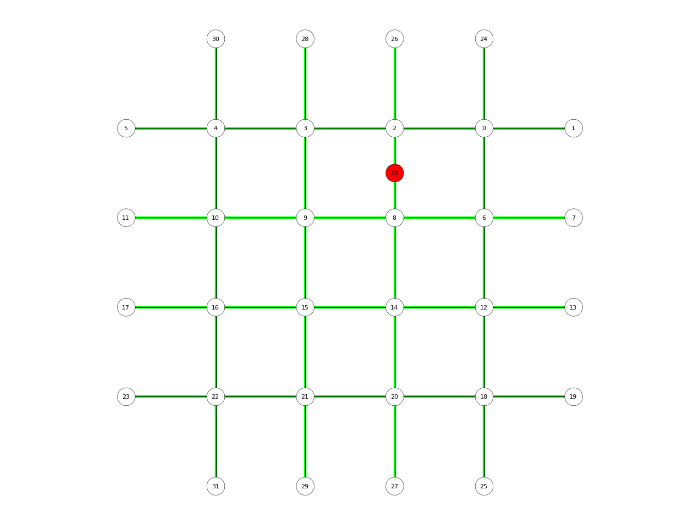

ClayStructure.split_edge
-
ClayStructure.split_edge(u, v, t=0.5) Split and edge by inserting a vertex along its length.
- Parameters
u (str) – The key of the first vertex of the edge.
v (str) – The key of the second vertex of the edge.
t (float) – The position of the inserted vertex.
- Returns
str – The key of the inserted vertex.
- Raises
ValueError – If t is not 0 <= t <= 1.
Exception – If u and v are not neighbors.
Examples
import compas from compas.datastructures import Network from compas_plotters import NetworkPlotter network = Network.from_obj(compas.get('lines.obj')) u, v = network.get_any_edge() a = network.split_edge(u, v) lines = [] for u, v in network.edges(): lines.append({ 'start': network.vertex_coordinates(u, 'xy'), 'end' : network.vertex_coordinates(v, 'xy'), 'arrow': 'end', 'width': 4.0, 'color': '#00ff00' }) plotter = NetworkPlotter(network) plotter.draw_lines(lines) plotter.draw_vertices( radius=0.2, text={key: key for key in network.vertices()}, facecolor={key: '#ff0000' for key in (a,)} ) plotter.draw_edges() plotter.show()(Source code, png, hires.png, pdf)

{kind=link}
{kind=link}